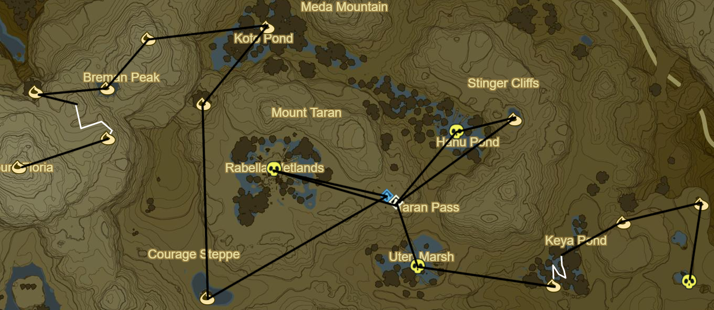

Faron 1
Faron Tower to SE
All towers!!!
Korok 756: Durian offering to NE
Korok 757: Fairylights to NW
Hinox to SE (30/40)
Korok 758: Race to NE
Korok 759: Flower trail to NW
Hinox to N (31/40)
Korok 760: Rock pattern to N
Side Quest: EX Treasure: Usurper King to W
Zant's Helmet
Korok 761: Pinwheel shooting to NE
Stone Talus(Junior) to N (34/40)
Korok 762: Acorn in tree to SE
Korok 763: Pinwheel shooting to SE
Farosh morning farming through cave to SE
Korok 764: Magnesis boulder in centre of Riola Spring
Shoda Sah Shrine to S behind waterfall (109/120)
Korok 765: Race to S
Side Quest: EX Treasure: Dark Armor
Phantom Ganon Skull at waterfall to SW
Korok 766: Magnesis puzzle
Korok 767: Pinwheel shooting to SW
Lakeside Stable to SE
Korok 768: Burn leaves below horse head
Side Quest: Thunder Magnet
Axe atop stable
Shai Uto Shrine to S (110/120)
Korok 769: Rock in middle of bog to NW
Korok 770: Durian offering to NW
Stone Talus (Junior) to S (35/40)
Korok 771: Stone pattern to SW
Korok 772: Stone on ledge to E
Korok 773: Balloon to SE
Clear out Monster Camp to E
Korok 774: Rock atop cliff to NW
Korok 775: Banana offering to NW
Korok 776: Magnesis puzzle to NE
Korok 777: Pinwheel shooting to NW at centre of bridge
Side Quest: EX Treasure: Dark Armor to NE
Phantom Ganon Greaves
Korok 778: Remove Luminous ore to E
Stone Talus to W (36/40)
Korok 779: Flower trail to NE
Korok 780: Rock to N
Korok 781: Durian trees to NE
Korok 782: Magnesis Puzzle to SE
Shrine Quest: A Song of Storms to SE
Qukah Nata Shrine (111/120)
Korok 783: Durian Trees to E
Stalnox to SW (32/40)
Korok 784: Rock pattern to SE
Korok 785: Rock pattern to SE
Follow path
Korok 786: Rock atop mountain to NE
Side Quest: A Gift of Nightshade
Nightshade
Korok 787: Rock beneath leaves to N
Yah Rin Shrine to SE (112/120)
Lurelin Village
Side Quest: Take Back the Sea
Use Travel Medallion for fast return if necessary
Side Quest: What's for Dinner?
Goat Butter
Hearty Blueshell Snail
Korok 788: Remove apple from between palm trees to W
Side Quest: Sunken Treaure
Korok 789: Rock pattern to S of earlier Korok
Side Quest: Sunken Treasure
Chests in center of reefs to SE
Warp back to Yah Rin Shrine
Korok 790: Rock pattern atop roof to SE
Korok 791: Flower trail atop inn
Complete Side Quest: Sunken Treasure
Korok 792: Flower trail to SE
Korok 793: Seaweed to SE
Korok 794: Rock by palm tree at Soka Point
Take picture of monument
Korok 795: Seaweed to W
Take Picture of monument to N
Take picture of monument to NE
Shrine Quest: A Fragmented Monument
Kah Yah Shrine (113/120)
Stone Talus to SW (37/40)
Korok 796: Lilies to N
Muwo Jeem Shrine to E (114/120)
Korok 797: Rock on ledge to NW
Korok 798: Rock pattern to NW
Korok 799: Fairylights to SW
Hinox to N (33/40)

Korok 800: Apple trees to N
Korok 801: Rock behind cracked boulders to W
Korok 802: Flower trail to SW
Hinox (Middle Kin) to W (34/40)
Take orb
Shrine Quest: The Three Giant Brothers to NW
Hinox (Youngest Kin) to NE (35/40)
Korok 803: Lilies to E
Grab orb to W and bring to Shrine Quest
Hinox (Oldest Kin) to NW (36/40)
Take orb and finish quest
Tawa Jinn Shrine (115/120)
Korok 804: Apple offering to SW
Korok 805: Rock by tree to N
Korok 806: Fairylights to NE
Korok 807: Rock atop Breman Peak to W
Korok 808: Rock circle to SW
Korok 809: Rock atop tree to W
Korok 810: Flower Trail to SE
Korok 811: Rock atop Mount Floria to W
Warp to Ne'ez Yohma to and rest at a inn(Water Bed)
Warp to Keo Ruug Shrine and Complete the Trial of the sword to prepare for Central Hyrule
Then warp to Rota Ooh Shrine
Next: [Central Hyrule 2](22 - Central2.md)